VulnHub: HarryPotter Part 1 - Aragog
Introduction
Hello everyone. Today I bring you the first part of three about the Harry Potter machines. Across the series we need to find the eight horcruxes (flags) hidden in each compromised account of the machines. I’ve been practicing a lot with manual techniques, but this time I want to work with pure Metasploit Framework to automate more of the process. Without further ado, let’s begin.
Architecture for attack
Before starting, it’s worth understanding how the lab is laid out. This series is built as three chained machines, where each one is only reachable from the previous:
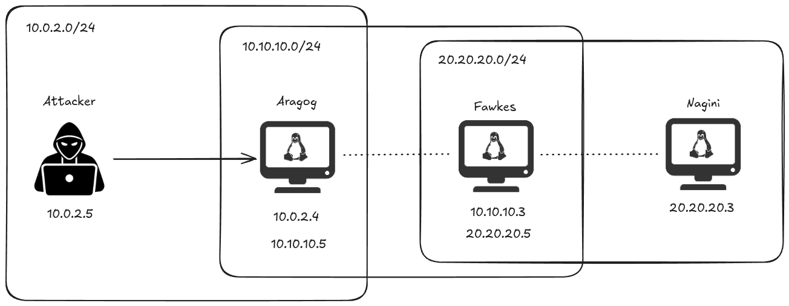
Our attacker box sits on the 10.0.2.0/24 network, which
only gives us direct access to Aragog
(10.0.2.4). Aragog is dual-homed: it also has an interface
on the internal 10.10.10.0/24 network, where
Fawkes (10.10.10.3) lives. Fawkes, in
turn, reaches a third network, 20.20.20.0/24, home to
Nagini (20.20.20.3). In other words, to
move forward we’ll have to compromise each machine and pivot through it
to reach the next one. In this first part, we focus on Aragog.
Reconnaissance
First, we can ping the target to confirm it’s alive and get a hint about the operating system we’re up against:
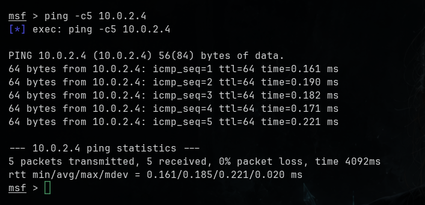
The host replies with a ttl=64, which is the default for
Linux systems, so we already know we’re dealing with a Linux box.
Now, let’s scan the target. Working from within Metasploit,
db_nmap runs the scan and stores the results straight into
the workspace database:
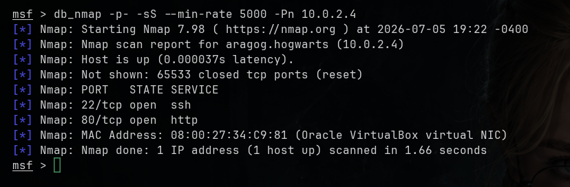
The scan resolves the host as aragog.hogwarts and shows
only two open ports: 22/tcp (ssh) and 80/tcp
(http).
Enumeration
With the open ports identified, let’s dig deeper into those services with version and default-script detection:
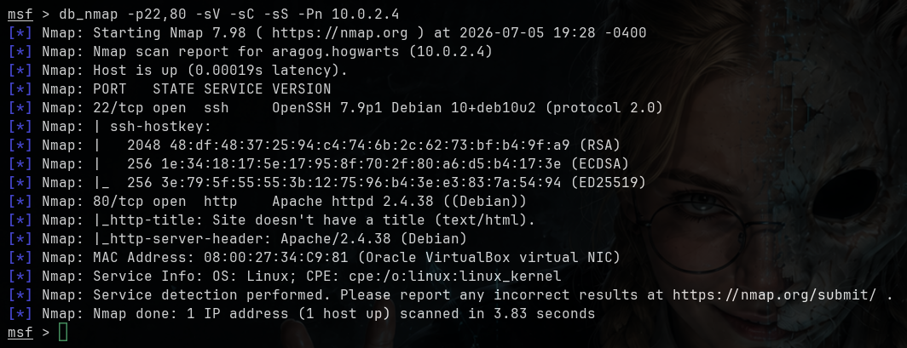
This gives us a much clearer picture. Port 22 is running OpenSSH 7.9p1 on Debian 10, and port 80 is serving Apache httpd 2.4.38 (Debian). Nmap also notes that the site “doesn’t have a title”, so the web root is likely a bare default page — the interesting content is probably elsewhere.
Since everything is being written to the database, we can pull a
clean summary at any time with the services command:
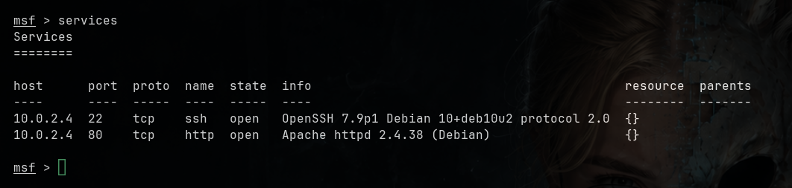
With SSH and a web server as our only entry points, and no obvious credentials yet, the web service on port 80 is the natural place to start enumerating.
Since the box identifies itself as aragog.hogwarts, we
map that hostname to its IP in our /etc/hosts file. This
way we can reach the site by name and make sure any virtual-host based
routing resolves correctly:
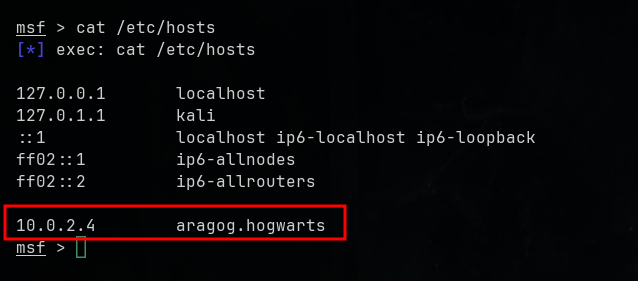
Browsing to the site, we’re greeted by nothing more than a Harry Potter image — no links, no forms, no visible functionality:
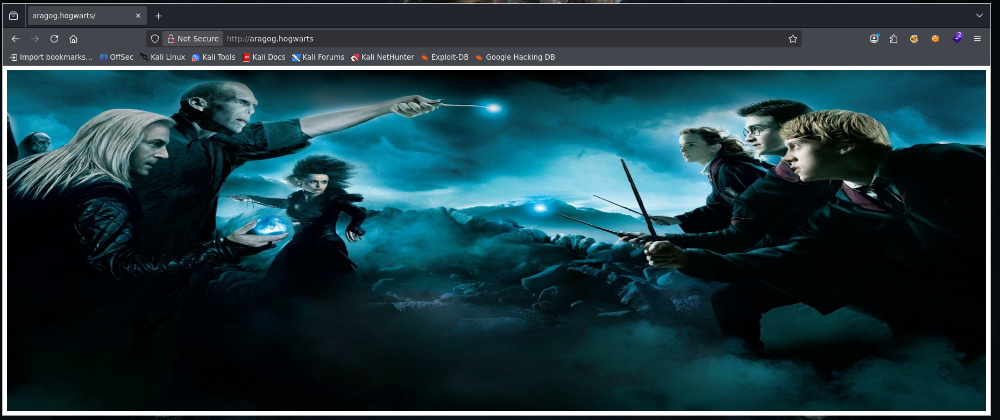
A bare landing page like this usually means the interesting content is hidden elsewhere, so the logical next step is to start fuzzing for directories and files.
Staying inside Metasploit, we use the
auxiliary/scanner/http/dir_scanner module to brute-force
directories. We just point RHOSTS at
aragog.hogwarts and leave the rest of the options at their
defaults:
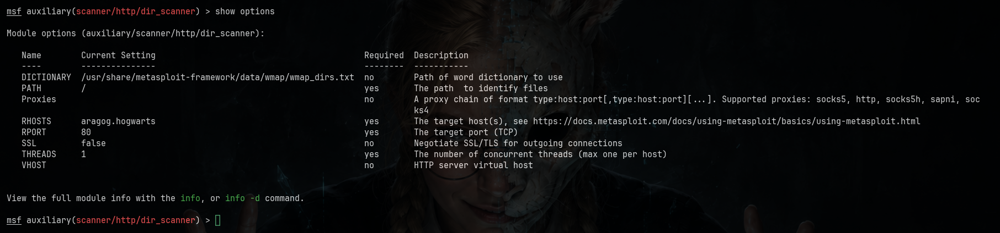
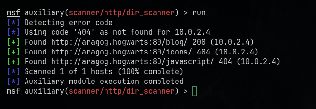
The scan returns a 200 on an interesting folder called
/blog. Before opening it in the browser, let’s also
enumerate files with the auxiliary/scanner/http/files_dir
module:
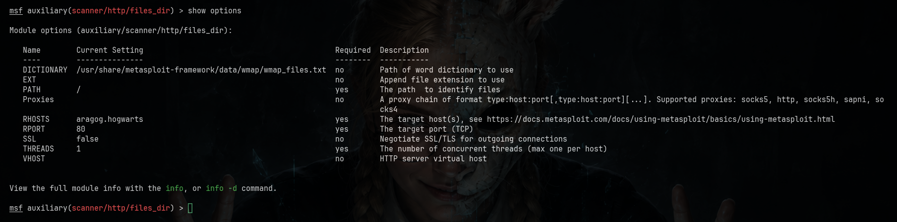
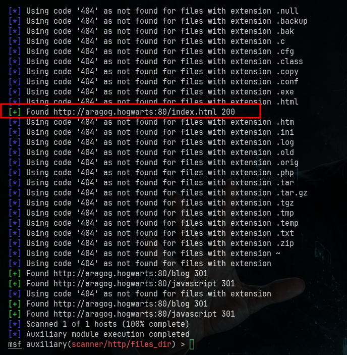
At the web root we only find index.html, and checking
its source confirms there’s nothing to it beyond the Harry Potter image
we already saw:
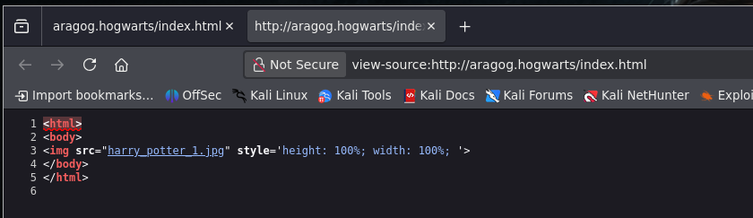
So /blog is clearly where we should focus next.
Accessing /blog, we’re met with a WordPress site that
renders completely unstyled — the layout looks broken:
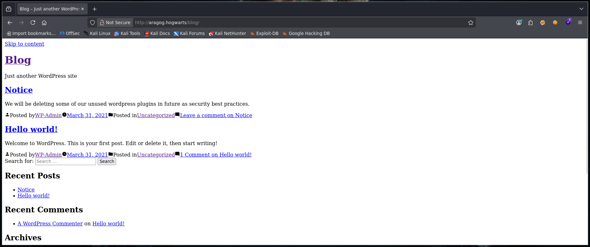
The reason becomes obvious when we inspect the page source: all the
CSS, scripts and links are loaded from a different hostname,
wordpress.aragog.hogwarts. Since that virtual host isn’t in
our /etc/hosts yet, the browser can’t fetch those assets,
which is why the styling never loads:
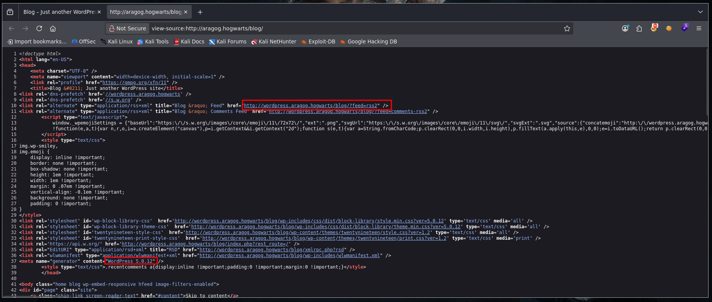
The generator meta tag also confirms we’re dealing with
WordPress 5.0.12. So our next move is to add this new vhost to
/etc/hosts and start digging into the WordPress
installation.
We add wordpress.aragog.hogwarts to our
/etc/hosts file and, voilà, the site now loads with all of
its styling in place:
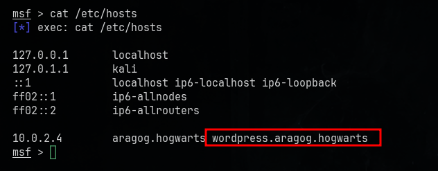
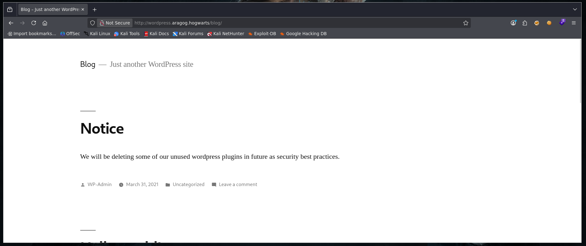
Before digging deeper into WordPress, one of the articles catches our eye:
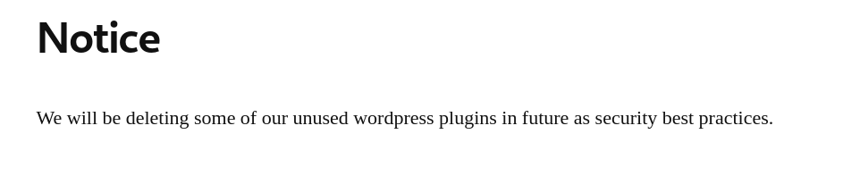
The “Notice” post mentions that they plan to delete some unused WordPress plugins as a security best practice. That’s a strong hint that a vulnerable or insecure plugin is installed — exactly the kind of lead we want to chase down.
For WordPress enumeration I prefer to use wpscan instead
of Metasploit — this tool bundles everything we need into a single scan.
The command is the following:
wpscan --url http://wordpress.aragog.hogwarts/blog/ \
--enumerate ap,vt,tt,cb,dbe,u,m \
--plugins-detection aggressive \
--plugins-version-detection aggressive \
--detection-mode aggressiveThe scan comes back with several interesting findings. It confirms
that XML-RPC is enabled, exposes the readme.html, and
identifies the WordPress version as 5.0.12 (flagged as insecure):
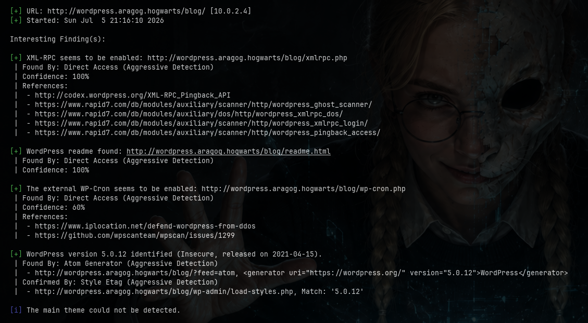
It also enumerates the installed plugins, akismet and
wp-file-manager:
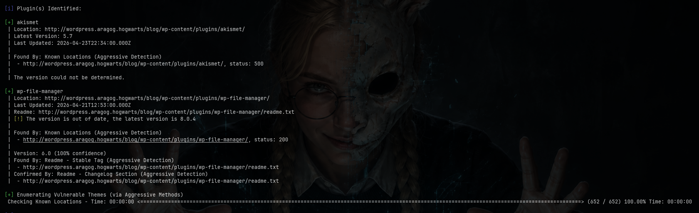
And, thanks to author-id brute forcing, it discovers a valid user:
wp-admin:
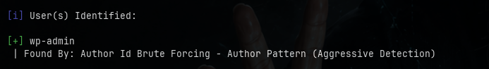
Let’s focus on the plugins. Of the two, akismet is
running the latest version, while wp-file-manager is on
version 6.0 — clearly out of date, since the latest release is
8.0.4:
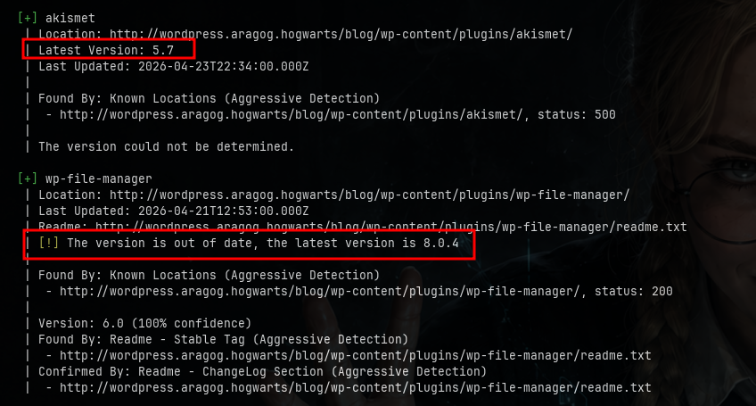
An up-to-date plugin is unlikely to help us, but an outdated one like
wp-file-manager is a prime candidate for a known
vulnerability. This lines up perfectly with the “unused plugins” hint
from the blog post, so that’s where we’ll dig next.
First, let’s understand what wp-file-manager actually
is:
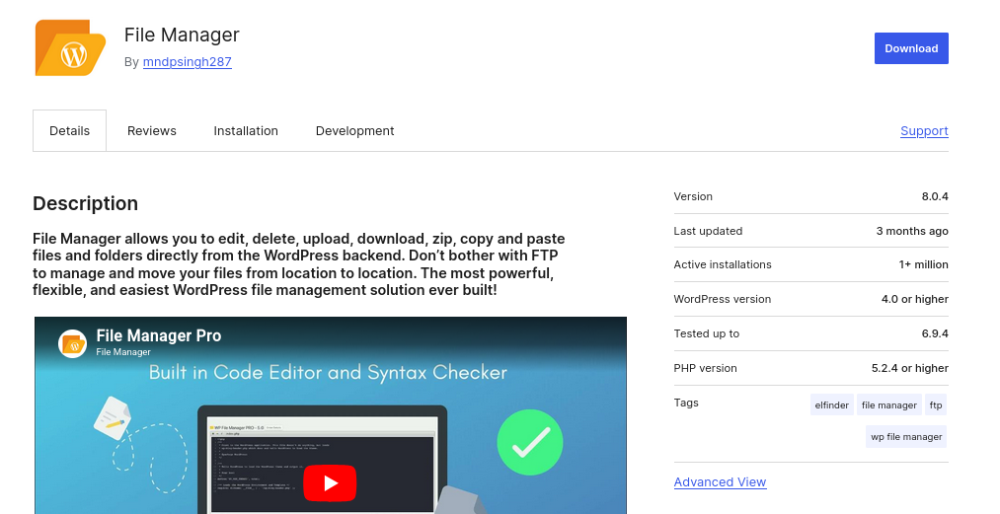
It’s a WordPress plugin that lets administrators upload, edit and manage files directly from the dashboard — a lot of power in a single plugin, which makes it an attractive target. Now that we know what it does, it’s time to look for known vulnerabilities affecting version 6.0:
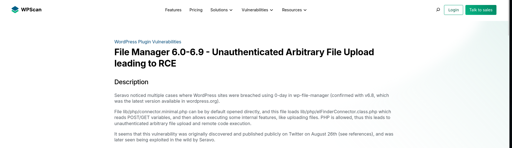
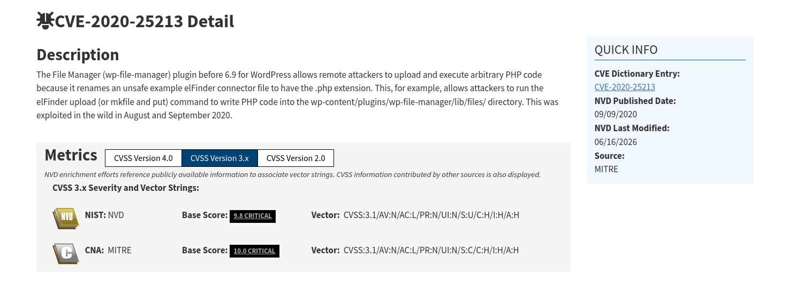
The search points us to CVE-2020-25213,
a critical (CVSS 9.8) unauthenticated remote code execution flaw
affecting wp-file-manager versions 6.0 to 6.8 — right in
our range. Internally, the plugin ships a copy of the elFinder
file-manager library, and the file
lib/php/connector.minimal.php exposes elFinder’s command
handler without any authentication or nonce validation. This means
anyone can reach it directly and invoke its upload command
to write arbitrary files — including a PHP webshell — into
wp-content/plugins/wp-file-manager/lib/files/. In other
words, no credentials are needed to drop a malicious file on the server
and execute it, which is exactly what we’ll leverage to get our
foothold.
Exploitation
With the vulnerability understood, the plan is straightforward:
upload a malicious PHP file through the unauthenticated elFinder
connector and then execute it. First, we generate the payload with
msfvenom — a PHP Meterpreter reverse shell set to connect
back to our machine on port 4444:
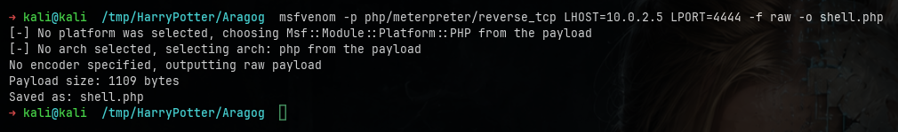
With the payload ready, we upload it by sending a POST request
straight to the connector.minimal.php endpoint, invoking
elFinder’s upload command — no authentication required. The
JSON response confirms the upload succeeded and, more importantly, tells
us where our file landed:
wp-content/plugins/wp-file-manager/lib/files/shell.php:
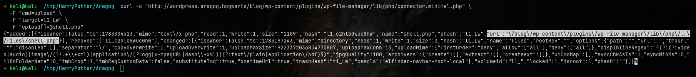
Before triggering the shell, we need something on the other end to
catch the connection. We set up a listener with Metasploit’s
exploit/multi/handler module, matching the same payload,
LHOST and LPORT we used when generating the
shell:
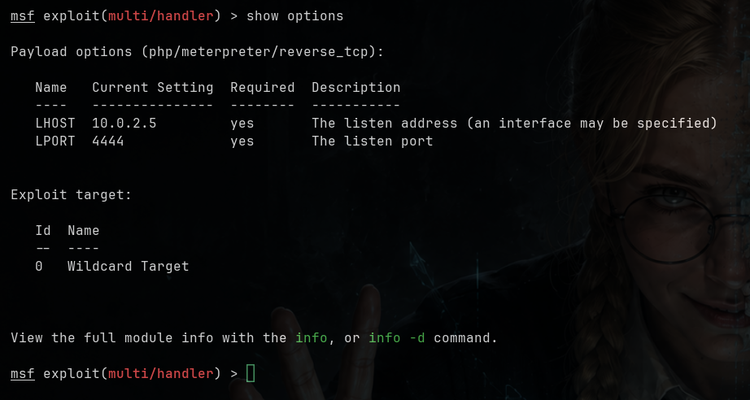
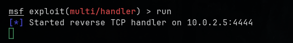
With the handler running, all that’s left is to execute our payload.
A simple curl request to the uploaded
shell.php is enough to fire it:
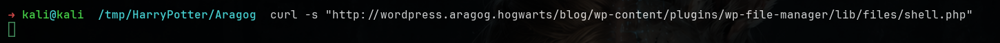
And there it is — the payload connects back and Metasploit opens a
Meterpreter session. A quick getuid confirms we’ve landed
on the box as the www-data user:
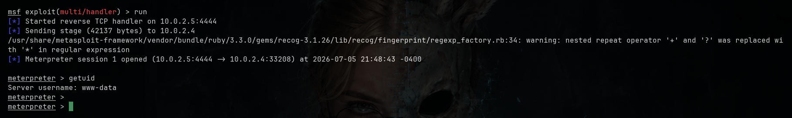
Privilege Escalation
Now that we have a foothold as www-data, the next step
is to escalate privileges. To hunt for potential attack vectors we’ll
run LinPEAS. Since we’re working from Metasploit, we background our
session and search for the PEASS launcher module,
post/multi/gather/peass, which uploads and runs the script
for us:
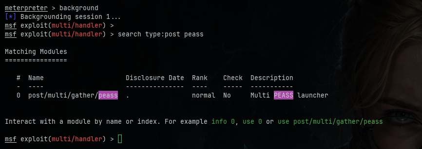
We configure the module, pointing SESSION at our active
Meterpreter session and setting WINPEASS to
false so it runs LinPEAS instead of WinPEAS:
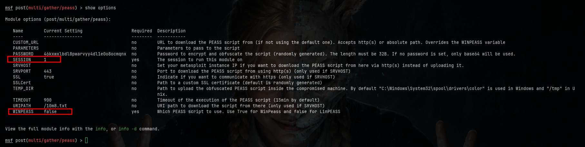
LinPEAS produces a lot of output, but a couple of things stand out. First, looking at the users and groups on the system:
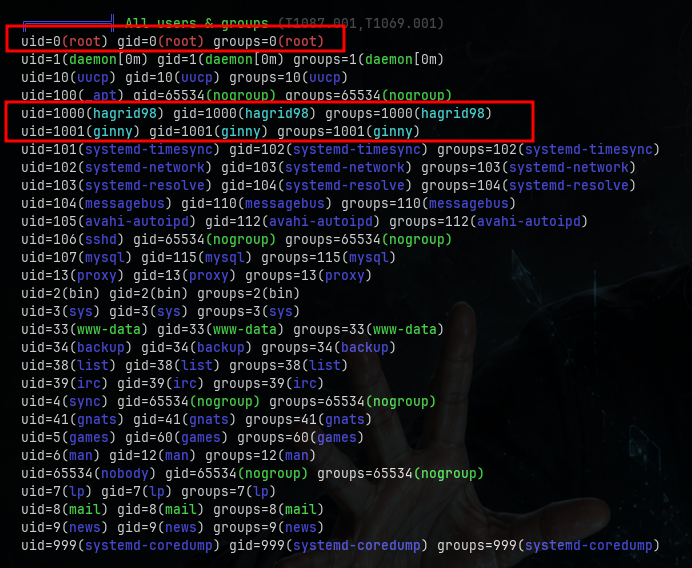
Beyond the usual service accounts, three catch our attention:
root, hagrid98 and ginny. The
last two are real user accounts and become our natural targets for
lateral movement.
The second interesting finding comes from LinPEAS searching for passwords inside PHP config files:
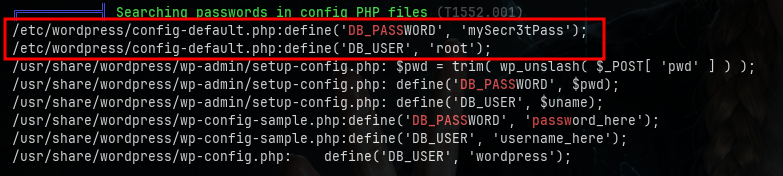
In /etc/wordpress/config-default.php it finds hardcoded
database credentials: the MySQL user root with the password
mySecr3tPass. Password reuse is extremely common, so the
obvious next step is to try this password against the system accounts we
just found and see if any of them lets us log in.
We’ll use Metasploit’s mysql_sql module to query the
database, but MySQL is only listening locally on the target, so first we
need a way to reach port 3306 from our machine. From our Meterpreter
session we set up a port forward with portfwd, mapping our
local port 3306 to the victim’s 127.0.0.1:3306. From now
on, anything we send to 127.0.0.1:3306 will be relayed
straight to MySQL on the victim:
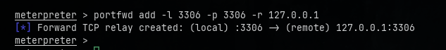
Back in Metasploit, we background the session and search for the
module we want, auxiliary/admin/mysql/mysql_sql, which lets
us run arbitrary SQL against the database:
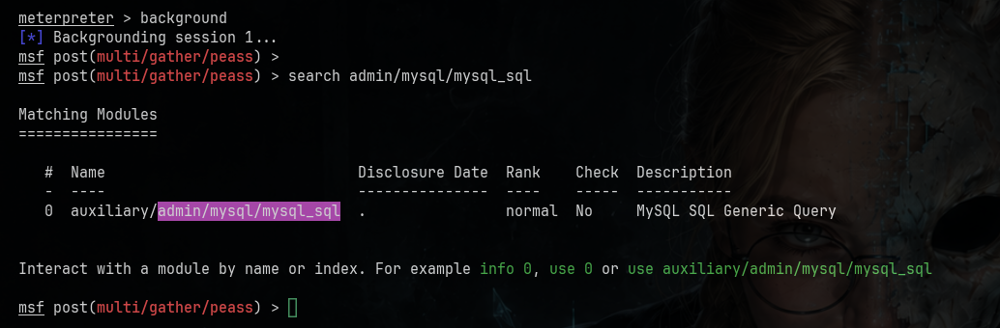
We load the module and check its options, pointing it at our
forwarded port and filling in the credentials we recovered —
authenticating as root with the password
mySecr3tPass against 127.0.0.1:3306:
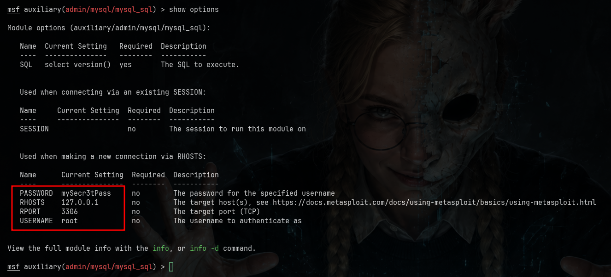
As a quick test, we leave the default select version()
query and run the module. It connects successfully and returns
10.3.27-MariaDB, which confirms our recovered credentials
are valid and that we now have working SQL access to the database
through the tunnel:
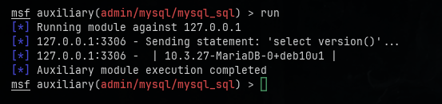
Now that we have SQL access, we go straight after the WordPress users
table. We set the module’s SQL option to
SELECT user_login,user_pass FROM wordpress.wp_users and run
it, which dumps our first user, hagrid98, together with its
password hash:
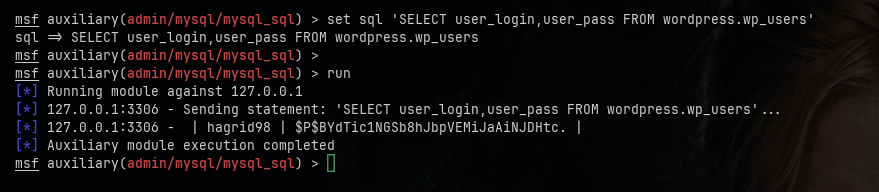
The hash starts with $P$, which tells us it’s a
WordPress phpass hash. It’s not directly reusable, so our next move will
be to crack it offline and recover the plaintext password.
We save the hash to a file and throw John the Ripper at it, using the
phpass format and the classic rockyou.txt
wordlist. It cracks almost instantly, revealing the plaintext password
password123:
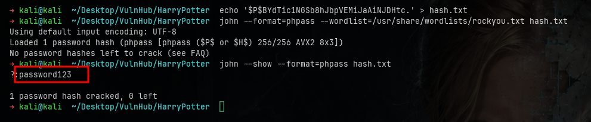
With a valid password in hand for hagrid98, we can now
try to reuse it to log into the system and finally move off the
www-data account.
We’ll do this with Metasploit’s ssh_login module. We
search for it and load it:
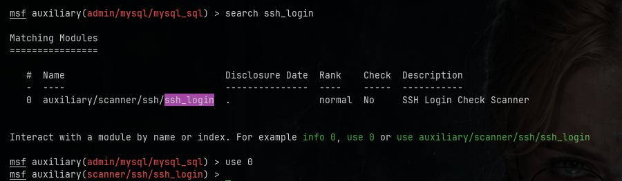
Then we set the options: USERNAME to
hagrid98, PASSWORD to password123
and RHOSTS pointing at the target on port 22. With
CreateSession enabled, a successful login will drop us
straight into an interactive session:
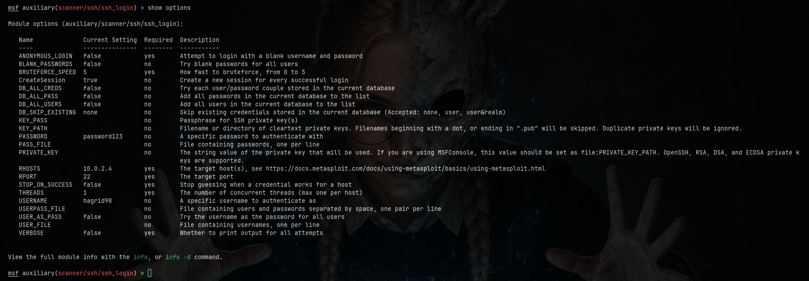
The module confirms the credentials are valid and opens a new SSH
session — we’re now hagrid98 on the box (uid 1000):
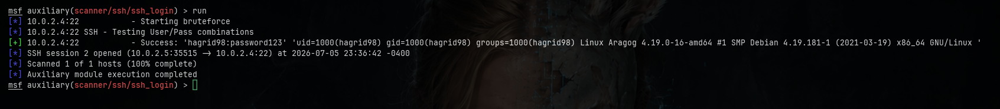
The session we get is a plain shell, though. To make the rest of the
work more comfortable, I want to upgrade it to Meterpreter, so we search
for the post/multi/manage/shell_to_meterpreter module and
load it:
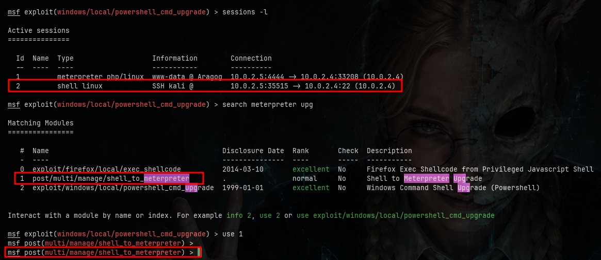
We configure it, pointing SESSION at our SSH session (id
2) and letting the module spin up a handler to catch the new
connection:
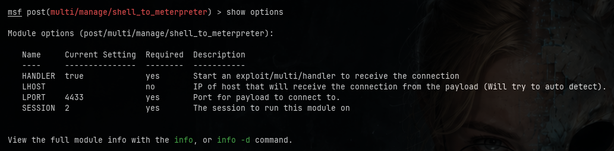
We run it and, once the handler fires, a fresh Meterpreter session
opens as hagrid98. We now have a much more capable foothold
to keep pushing the privilege escalation:
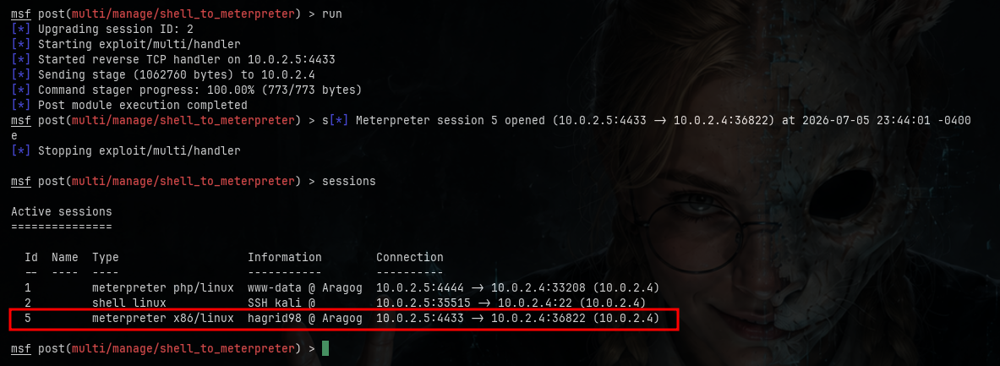
We interact with the new session and a quick getuid
confirms we’re now operating as hagrid98 through
Meterpreter:
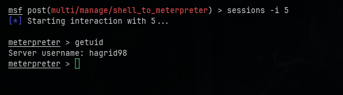
With a proper session on the box, it’s time to claim our reward.
Listing hagrid98’s home directory reveals a
horcrux1.txt file, and reading it gives us our first
horcrux — a base64-encoded string:
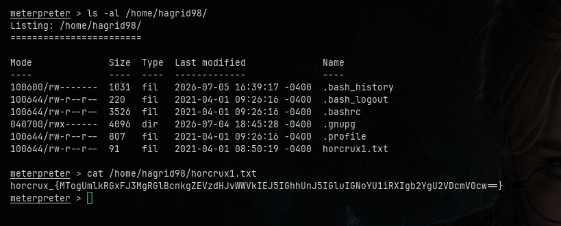
Decoding it reveals the hidden message:
1: RidDLE's DiAry dEstroYed By haRry in chaMbEr of SeCrets.
That’s the first of the eight horcruxes captured:
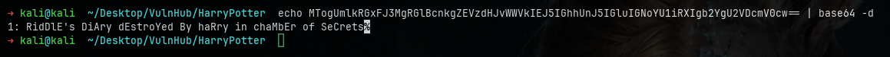
Going back to the LinPEAS output from earlier, another detail stands
out in the backup files section: a script at
/opt/.backup.sh, owned by hagrid98 and
recently modified:
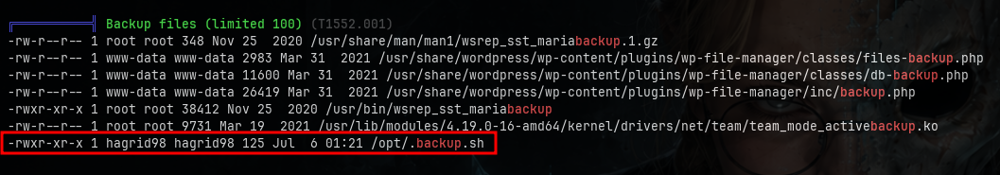
Let’s see what it does:
The script is short: it just recursively copies the WordPress uploads
directory into /tmp/tmp_wp_uploads — a harmless-looking
backup routine. On its own it does nothing dangerous, but what matters
is who owns it and who runs it: the file belongs to
hagrid98, so we can edit it, and if it turns out to be
executed by root on a schedule, we could replace its contents with any
command we want and have root run it for us.
The fact that it’s a backup script strongly suggests it runs
periodically, most likely through a cron job owned by root. To confirm
this theory we’ll use pspy, a tool that lets us watch
processes and scheduled tasks in real time without needing root. First,
we download pspy64 on our machine:
Then we upload it to the target through our Meterpreter session:
After a minute, pspy gives us exactly the confirmation
we were after: the /opt/.backup.sh script is executed by
root (UID=0) through CRON, and it repeats every minute:
This confirms our theory. The script runs as root every minute and,
crucially, hagrid98 owns it — so we can rewrite it with our
own payload and let the next cron run execute it as root. That’s our
path to a root shell.
We edit /opt/.backup.sh and replace its content with the
classic SUID trick: copy /bin/bash to
/tmp/sbash and set the SUID bit on it with
chmod +s. When root runs the script,
/tmp/sbash will be created as a root-owned SUID binary:
Now we just wait for the cron job to fire. A minute later, listing
/tmp shows our sbash in place — owned by root
and carrying the SUID bit (-rwsr-sr-x), exactly as planned.
We run it with /tmp/sbash -p to preserve the elevated
privileges, and id confirms we now have
euid=0(root):
Finally, let’s set up persistence and get ourselves a stable root
shell. From our root context, we generate an SSH key pair and append our
public key to root’s authorized_keys:
ssh-keygen -t rsa -f ~/.ssh/id_rsa -N ""
cat ~/.ssh/id_rsa.pub >> /root/.ssh/authorized_keysThen we copy the private key back to our machine and restrict its
permissions to 600 — SSH refuses to use a key with loose
permissions:
Now we turn to the ssh_login module again, but this time
we authenticate with the stolen key: we set KEY_PATH to our
copied private key and USERNAME to root:
We run it and get a successful login as uid=0(root) — a
fresh SSH session as root opens:
As before, we upgrade this plain SSH shell to Meterpreter with the
shell_to_meterpreter module, pointing it at our new root
session:
And there we have it — a stable Meterpreter session running as
root. A quick getuid and sysinfo
confirm full control over the box (Aragog, Debian 10.9):
And now that we’re root, we can grab our second horcrux. Listing
root’s home directory reveals horcrux2.txt, and reading it
prints a completion banner confirming we’ve fully pwned Aragog — along
with the second (and final) horcrux hidden on this machine:
Decoding it gives us the second message:
2: maRvoLo GaUnt's riNg deStrOyed bY DUmbledOre:
Before wrapping up, a quick look at the network interfaces with
ifconfig reveals something interesting: besides the
10.0.2.0/24 network we came in through, the box has a
second interface sitting on 10.10.10.0/24. That internal
network is our gateway to the rest of the machines in the series, and
it’s exactly where the pivoting will begin:
Conclusions
For now, that’s all, friends. We rooted Aragog and recovered both of
its horcruxes. In the next article we’ll use this foothold to pivot into
the 10.10.10.0/24 network and continue hunting the
remaining horcruxes. See you there.
~Grepmam